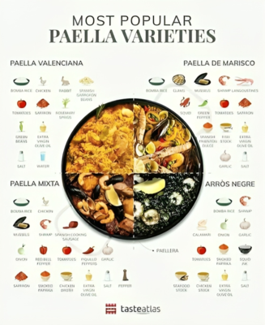
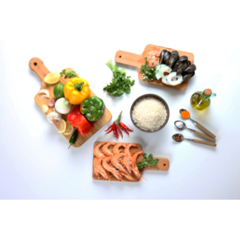
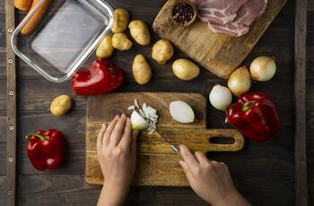
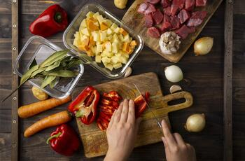
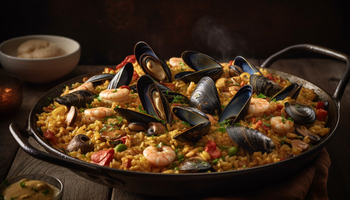
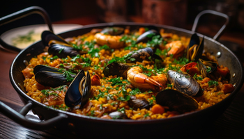
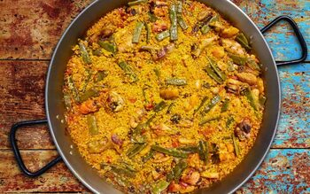
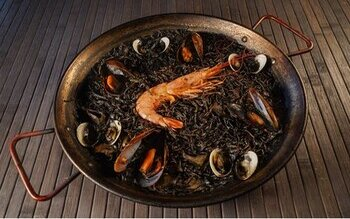

Tipo de Paellas Españolas
Descubre cómo hacemos las mejores Recetas de Paellas Españolas.
En esta sección encontrarás recetas de Paellas con arroces muy fáciles, sencillas y vídeos de tus platos favoritos:
Por ejemplo
- Paella Valenciana
- Paella Mixta
- Paella de Mariscos
- Paella de Arroz Negro
- Y mucho mas

Un poco de informacion antes de empezar
Antes de cocinar una de estas recetas te invitamos a que sepas un poco de su historia
El origen de la paella Española se remonta al siglo XV y XVI en las zonas más rurales de València.
Este plato nació por la necesidad de los campesinos de preparar una comida fácil con los ingredientes que tenían a mano.
Donde surguieron muchas bariaciones como la Paella de arroz negro, la Paella Valenciana y muchas mas
Hoy te vamos a enseñar como se prepara una buena Paella de Mariscos
Lista de ingredientes para una paella de mariscos


- Arroz redondo o bomba : 350 gramos
- Caldo de pescado –1,75 litros
- Espárragos trigueros – 1 manojo
- Pimiento verde: 1
- Mejillones: 500 g
- Cigalas – 6 unidades
- Langostinos – 8 unidades
- Tomate natural tamizado: 225 ml
- Jugo de limón: el de medio limón
- Aceite de oliva virgen: 100 ml
- Azafrán molido o colorante alimentario: ½ cucharadita
- Sal: al gusto
- Perejil picado –1 cucharada
Paso a paso de como cocinar una paella de mariscos


- Paso 1: Para limpiar los mejillones: La opción más cómoda es comprar los mejillones cocidos que vienen congelados y limpios en una bolsa te ahorras tener que limpiar los mejillones. Sin embargo, hay que reconocer que los mejillones frescos tienen más sabor. Te contamos cómo limpiarlos para la receta.
- Paso 2: Prepara un recipiente con agua y una cucharada de sal y deja reposar media hora. Durante este tiempo las adherencias de la concha se reblandecen. Rasca con un tenedor o una cuchara, si aparece alguno roto lo quitamos, corta también si tiene valvas.
- Paso 3: Deposita los mejillones en un colador grande, cambia el agua del recipiente donde los tuvimos a remojo, sumerge el colador varias veces y escurre.
- paso 4: Para las cigalas y langostinos
- Paso 5: Para las cigalas y langostinos. Si son congeladas las dejas en la nevera la noche anterior para que se descongelen. Una vez descongelado (o si lo tienes fresco, seca el marisco con papel de cocina). Añade aceite a una sartén y dora las cigalas y langostinos con su piel durante unos minutos, luego los retiramos de la sartén y reservamos.
- Paso 6: Mientras tanto corta los espárragos, el pimiento verde y los dientes de ajo estos últimos en trozos gruesos y sin retirar la piel. Añade los dientes de ajo a una cazuela o sartén honda con aceite y saltea dos minutos, si puede ser tipo paella mejor. Luego retira de la sartén e incorpora el pimiento verde y los espárragos trigueros. Saltea unos minutos.
- Paso 7: A continuación agrega el tomate tamizado y cocina durante 8 minutos. Incorpora el arroz y espolvorear el azafrán o el colorante, rehoga el arroz durante dos minutos.
- Paso 8: Añadimos el caldo
- Paso 9: Incorpora el caldo de pescado, para 350 g de arroz nos hace falta 1,75 litros si lo vas a preparar tipo paella, pero si lo vas a preparar en una cazuela u olla entonces necesitamos menos caldo (serían un litro solamente). La diferencia es que en la cocción tipo paella al tener más superficie el recipiente requiere más caldo y este se evapora con más facilidad. Luego si vas usar paella más caldo si preparar el arroz en otro recipiente para 350 g usa un litro de caldo solamente.
- Cocina el arroz 15 minutos a fuego medio. Cuando falten 8 minutos (es decir transcurrido 7 de cocción), es cuando añadimos los langostinos, los mejillones y las cigalas. Una vez finalizada la cocción apaga el fuego cubre el recipiente con un paño o con un plato al revés y deja reposar 5 minutos. La sal es mejor añadirla al final ya que los mariscos tiene bastante sal y es posible nos pasemos si la añadimos antes.
- A la hora de servir agregar un poco de zumo de limón y perejil picado
Notas y Consejos
Esta receta lleva tiempo pero vale la pena, es una experiencia culinaria que recomendamos a cualquier persona
Paella Mixta

- Pechuga de pollo – 270 gramos
- Costillas de cerdo – 270 gramos
- Gambón rojo – 280 gramos
- Sepia – 275 gramos
- Mejillones – 300 gramos
- Arroz – 300 gramos
- Cebolla – 1 unidad
- Pimiento rojo – 1/2 unidades
- Tomates – 3 unidades
- Guisantes – 70 gramos
- Caldo de pescado – 1200 mililitros
- Vino blanco – 150 mililitros
- Pimentón dulce – 1 cucharada pequeña
- Azafrán – 0,1 gramos
- Sal – al gusto
- Pimienta negra – al gusto
- Aceite de oliva – 4 cucharadas grandes
Paella de Mariscos

- Arroz redondo o bomba : 350 gramos
- Caldo de pescado –1,75 litros
- Espárragos trigueros – 1 manojo
- Pimiento verde: 1
- Mejillones: 500 g
- Cigalas – 6 unidades
- Langostinos – 8 unidades
- Tomate natural tamizado: 225 ml
- Jugo de limón: el de medio limón
- Aceite de oliva virgen: 100 ml
- Azafrán molido o colorante alimentario: ½ cucharadita
- Sal: al gusto
- Perejil picado –1 cucharada
Paella Valenciana

- Arroz – 2 vasos
- Pollo de contramuslo sin piel – 500 gramos
- Conejo - 400 gramos
- Vino blanco - 1 vaso
- Salsa de tomate natural - 2 cucharada soperas
- Pimiento verde – 1 unidad
- Cebolla – 1 unidad
- Cúrcuma – 1 cucharada pequeña
- Ajo – 1 diente
- Sal: al gusto
- Aceite de oliva
Paella de Arroz Negro

- Arroz bomba - 200 gr.
- Caldo de pescado - 600 ml.
- Chipirones - 500 gr.
- Tinta negra de calamar - 2 sobres
- Ajo - 1 diente
- Cebolla - 1 unidad
- Tomate - 1 unidad
- Aceite - 50 ml.
- Sal: al gusto